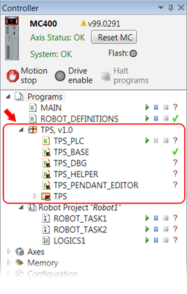

Adding a package to your current project can be done from the “Project”→”Packages” menu with some variations
You will need the appropriate project key for the package in the same way as for encrypted projects. Once successfully added to the project the package will appear in the controller tree. You will not be able to view and modify the package content.
|
Action |
Description |
|
Add to Project |
Opens the package manager which has the appropriate functionality to add a package from the installed package set of Motion Perfect. See Package Manager for details. |
|
Import and Add |
Allows to install and directly add to your project package(s) from package file(s). The latter have been generated by Motion Perfect package share/export functionality. |
|
Package Manager |
Opens the package manager which provides rich functionality for package management. See Package Manager for details. |
After the package has been added to your project it will appear in the project tree:

Management of the package can be done from the Package context menu .